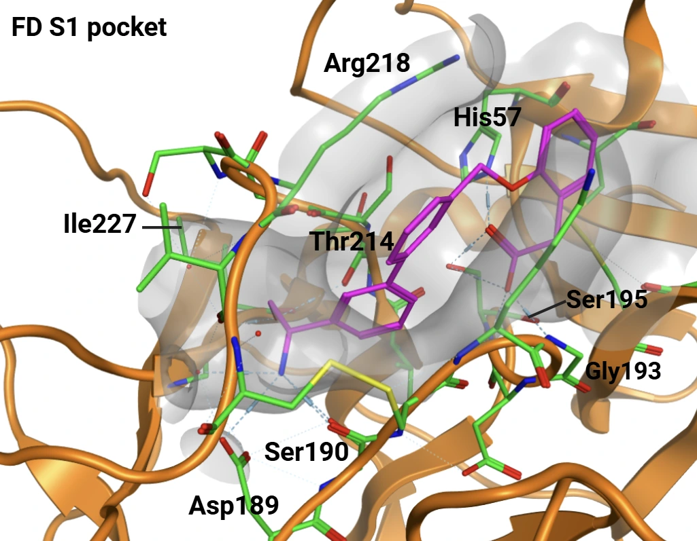

Complement target prioritisation in rare kidney disease
Assessed the evidence for small-molecule targets in atypical haemolytic uraemic syndrome and C3 glomerulopathy.


From ten genes to five protein targets
I started with ten genes linked to atypical haemolytic uraemic syndrome or C3 glomerulopathy. I used Python to bring together disease associations, compound records and protein structures. Five complement proteins went forward for detailed comparison. For each one, I looked for small molecules with measured activity and structures showing where a ligand binds.
Which evidence supports a small-molecule target?
Several therapies already act on C3 or C5. Many are peptides, proteins or antibodies, which tells us little about where a small molecule might bind. I therefore compared the small molecules reported for each target, their measured activity and the pockets they occupied. Factors D and B ranked highest. For factor D, the structure above shows exactly where the ligand J6T sits.